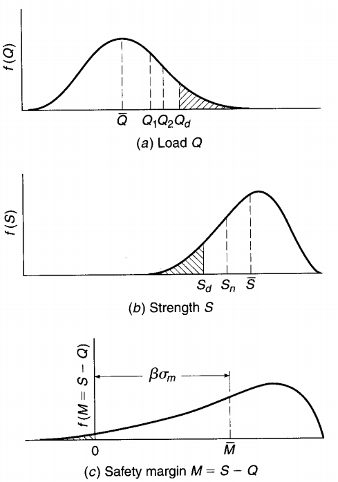
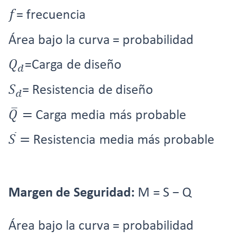

Introducción al Diseño de Concreto Reforzado
Consideraciones fundamentales del diseño estructural, sinergia físico-química acero-concreto, evolución del marco regulatorio colombiano y formulación matemática rigurosa de las filosofías de diseño: Probabilidad, Esfuerzos Admisibles (ASD), Resistencia Última (LRFD / Bloque de Whitney), Estados Límites y Diseño Sísmico por Desempeño.

Textos de Respaldo Teórico y Normativo
Todas las ecuaciones, hipótesis constitutivas y criterios de este módulo se fundamentan en las siguientes obras de referencia (haz clic en cualquier portada para ampliarla):


Generalidades: ¿Qué es el Diseño y cuál es la Perspectiva del Ingeniero Civil?
El diseño estructural trasciende el simple cálculo de fórmulas: es la síntesis entre la concepción formal creativa y la validación matemática rigurosa de la estabilidad, resistencia y rigidez de cada componente.
- Traza: Delineación de un edificio o de una figura.
- Proyecto: Plan que configura algo antes de su materialización.
- Concepción: Creación original de una obra u objeto.

- Proyección: Ideación de objetos útiles, funcionales y estéticos.
- Modelo: Dibujo o esquema que sirve de guía para su realización física.
- Ejecución: Plan detallado para llevar a cabo una idea constructiva.

El proceso de diseño no es único (problema matemáticamente abierto): Para una misma necesidad arquitectónica y geotécnica existen múltiples configuraciones estructurales viables (pórticos resistentes a momento, sistemas combinados, muros estructurales, duales). El ingeniero combina intuición estructural y creatividad con riguroso razonamiento mecánico y matemático.
Creación y Validación Integral: Cada elemento ($i \in \{1, \dots, N\}$) y cada conexión debe satisfacer simultáneamente las ecuaciones diferenciales de equilibrio, las relaciones constitutivas de los materiales ($\sigma - \varepsilon$), la compatibilidad cinemática de deformaciones y las restricciones de constructibilidad.


Las Cinco Consideraciones Esenciales del Diseño Estructural
Todo proyecto estructural exitoso debe equilibrar cinco ejes rectores interdependientes:
- Cumplimiento estricto del uso previsto.
- Control de deflexiones y vibraciones en servicio.
- Habitabilidad y confort del usuario final.
- Racionalidad y optimización de materiales.
- Modulación de formaletas y constructibilidad.
- Balance entre costo inicial ($C_0$) y costo en el ciclo de vida ($LCC$).
- Resistencia seccional última ($\phi R_n \ge R_u$).
- Rigidez lateral y control de derivas ($\Delta \le 1.0\% h_{pi}$).
- Ductilidad ($\mu$) y disipación de energía sísmica.
- Vida útil de diseño sin degradación prematura.
- Espesores mínimos de recubrimiento del refuerzo.
- Baja relación agua/cemento y protección frente a sulfatos y cloruros.
- Sinergia entre arquitectura, arte e ingeniería.
- Expresión honesta de la trayectoria de cargas.
- Esbeltez, ritmo estructural e impacto visual.
1. Funcionalidad del Sistema y 2. Economía (Ingenieros vs. Inversionistas)
Consiste en darle forma y dimensiones a un sistema estructural para que cumpla una función determinada con un grado de seguridad razonable y que, bajo condiciones normales de servicio, tenga un comportamiento adecuado libre de deflexiones o vibraciones excesivas.

- Visión del Ingeniero: Busca un adecuado o alto desempeño a lo largo de toda la vida útil de la edificación ($t \approx 50\text{ a }100\text{ años}$), minimizando los costos de reparación ante eventos sísmicos y el deterioro ambiental.
- Visión del Inversionista: Tiende a optar por desempeños mínimos normativos para disminuir costos iniciales ($C_0$) y maximizar el retorno financiero en menor tiempo.

3. Adecuación Estructural: Resistencia, Rigidez, Ductilidad y Fatiga
Toda edificación debe cumplir requisitos que garanticen tres propiedades esenciales ante cualquier solicitación prevista, además de controlar la fatiga cuando existan cargas cíclicas repetitivas:
Capacidad de soportar las fuerzas internas ($M_u, V_u, P_u, T_u$) sin fallar ni fracturarse:
Control de las deformaciones y desplazamientos horizontales relativos de entrepiso ($\Delta_i$) para proteger elementos no estructurales y limitar efectos $P-\Delta$:
Capacidad de incursionar y disipar energía por histéresis en el rango inelástico antes del agotamiento:
Caso típico de los puentes vehiculares/ferroviarios y vigas carrileras sometidos a millones de ciclos de carga alta repetitiva, donde debe controlarse el rango de variación de esfuerzos $\Delta f_s$ para evitar fractura frágil por fatiga.

4. Durabilidad y Protección Ambiental del Concreto Reforzado
Las estructuras deben protegerse frente a los mecanismos físicos y químicos de degradación ambiental para garantizar su desempeño a lo largo de toda su vida útil prevista.
Cuando la carbonatación o los iones cloruro en ambientes costeros o industriales atraviesan el recubrimiento de concreto, se despasiva el acero. La oxidación genera productos férricos expansivos (de 2 a 6 veces su volumen original) que producen fisuración longitudinal, descascaramiento del recubrimiento (spalling) y pérdida crítica de la sección transversal efectiva $A_s$.
La penetración de sulfatos presentes en suelos, aguas freáticas o ambientes industriales reacciona con la matriz cementante hidratada produciendo expansión interna, fisuración en patrón de malla y degradación progresiva de la pasta de cemento, lo que exige concretos densos de baja relación agua/material cementante ($a/mc$).
Frente a estructuras deterioradas por corrosión o ataque químico, la ingeniería de rehabilitación interviene mediante retiro del concreto contaminado, limpieza o restitución de barras, encamisado estructural de columnas y vigas, y aplicación de barreras de protección epóxica en pórticos industriales y edificaciones costeras.


5. Estética: Caso Escultura Homenaje al Congo y Grandes Obras Históricas
El ingeniero estructural y el artista o arquitecto actúan como intérpretes de las necesidades del proyecto para conjugar impacto estético y estabilidad mecánica.
Análisis comparativo de alternativas estructurales para una escultura monumental de gran altura con fuerte restricción geométrica en su apoyo basal:
- Altura total: $8.00\text{ m}$ (Cuerpo escultórico $4.00\text{ m}$ + Base/Pedestal $3.00\text{ m}$ + Cimentación $1.00\text{ m}$).
- Apoyo crítico en la base: Sección reducida de $0.60 \times 0.50\text{ m}$ ($A_g = 0.30\text{ m}^2$).
- Opción 1 — Concreto $5000\text{ psi}$ ($35\text{ MPa}$): Peso aproximado de $27\text{ Toneladas}$. Genera una elevada masa sísmica y altos momentos de vuelco sobre la garganta basal reducida.
- Opción 2 — Aluminio + Estructura interna de Hierro: Peso aproximado de $9\text{ Toneladas}$. Reduce a la tercera parte ($1/3$) las fuerzas gravitacionales e inerciales sísmicas sobre el pedestal y la cimentación.


Restricciones del Diseño y la Unión Físico-Química del Concreto Reforzado
La tarea del ingeniero es simplificar racionalmente condiciones complejas combinando seguridad y servicio frente a cuatro grandes obstáculos:
Presupuesto limitado del proyecto.
Limitaciones físicas y mecánicas.
Solicitaciones gravitacionales y ambientales.
Topografía escarpada y geotecnia local.


¿Por qué unir Concreto y Acero? — Los Dos “Milagros” Físico-Químicos de la Unión
1. Debilidad intrínseca del concreto a tracción: El concreto es una roca artificial que resiste excelente compresión ($f'_c \approx 21\text{ a }56\text{ MPa}$), pero su resistencia a tracción es despreciable ($f_t \approx 0.10 f'_c \approx 2.0\text{ a }4.0\text{ MPa}$).
2. Papel estructural del acero y paradoja económica: El acero de refuerzo posee una alta resistencia a tracción y compresión ($f_y = 420\text{ MPa}$, unas 150 veces la tracción del concreto) y aporta ductilidad seccional (deformación plástica como advertencia visual antes del colapso). La unión aprovecha la compresión masiva económica del concreto y la tracción dúctil del acero.
Ante cambios de temperatura día/noche, ambos materiales se dilatan y contraen prácticamente al unísono, evitando tensiones tangenciales parásitas que romperían la adherencia interfacial (interlock químico-mecánico):
La pasta de cemento hidratada libera hidróxido de calcio $\text{[Ca(OH)}_2\text{]}$, creando un entorno altamente alcalino. Este medio genera una micropelícula de óxido férrico gamma ($\gamma\text{-Fe}_2\text{O}_3$, capa pasivante) que blinda químicamente las barras contra la corrosión mientras no haya carbonatación:
Evolución de la Normativa Sismorresistente Colombiana
El desarrollo normativo en Colombia ha respondido tanto al avance de la ingeniería sísmica internacional como a las lecciones aprendidas tras sismos destructivos en el territorio nacional.


Código Colombiano de Construcciones Sismo Resistentes: Primera norma nacional de carácter obligatorio, expedida tras el devastador terremoto de Popayán del 31 de marzo de 1983.
Ley Marco de Construcciones Sismorresistentes: Define las responsabilidades profesionales. Su Artículo 39 crea la Comisión Asesora Permanente (adscrita al Ministerio de Vivienda), que expide las resoluciones de actualización técnica obligatoria.
Primera gran actualización que reemplazó el código de 1984 e incorporó avances en microzonificación sísmica, control de derivas y estudios geotécnicos.
Establece los criterios mínimos de diseño, construcción y supervisión técnica en Colombia. Su eje central es el Estudio General de Amenaza Sísmica de Colombia (AIS, 2009), que incorporó cerca de 22,000 sismos adicionales registrados desde 1995 y modernizó los mapas de amenaza y parámetros de diseño.
Se encuentra en fase de debate técnico y regulatorio para su aprobación por decreto: actualización del mapa de amenaza sísmica de Colombia, nuevo mapa de viento, detallado del refuerzo, optimización de estructuras metálicas, exigencias más rigurosas en edificaciones de gran altura y estudios geotécnicos avanzados.
Procedimiento de Diseño, Planos, Memorias y Criterios Vitales
Predimensionado y Cargas: Coordinación interdisciplinaria (geotecnia, arquitectura, redes) y evaluación de solicitaciones definitivas.
Amenaza y Sistema: Parámetros $A_a$ y $A_v$, movimientos sísmicos de diseño, material estructural y grado de irregularidad.
Análisis y Derivas: Fuerzas sísmicas, análisis estructural, desplazamientos horizontales y verificación estricta de derivas.
Diseño Final: Combinación de solicitaciones, diseño y despiece de elementos, cimentación y elementos no estructurales.
- Materiales: Especificaciones de concreto y acero.
- Geometría: Tamaño, localización y refuerzos.
- Disipación: Grado de disipación de energía (DMI, DMO, DES).
- Cargas: Cargas vivas, muertas y Grupo de Uso.
- Sistema: Descripción del sistema estructural.
- Solicitaciones: Evaluación detallada de cargas.
- Sismo: Cálculo de la fuerza sísmica y análisis usado.
- Rigidez: Verificación de derivas de piso.

- 1. Reserva de Fuerza: Adecuada reserva de resistencia contra la falla o colapso frágil.
- 2. Rigidez Lateral Adecuada: Control de desplazamientos ante viento y sismo en edificios esbeltos.
- 3. Desempeño Eficiente: Operatividad continua durante toda la vida útil (Ej. Puerto y edificaciones en Barranquilla).

Naturaleza Probabilística de Cargas ($Q$) y Resistencias ($S$)
Tanto las cargas ($Q$) como la resistencia ($S$) tienen naturaleza variable o probabilística; no existe certeza determinística absoluta contra fallas, sino un control racional de la probabilidad de excedencia.
Si la solicitación $Q \sim \mathcal{N}(\mu_Q, \sigma_Q^2)$ y la resistencia $S \sim \mathcal{N}(\mu_S, \sigma_S^2)$ son variables aleatorias independientes, el Margen de Seguridad es $M = S - Q$:
Para una probabilidad de excedencia $P_E = 10\%$ en una vida útil de exposición $t = 50\text{ años}$, el proceso de Poisson arroja:


Diseño por Esfuerzos Admisibles (ASD / Elástico)
Basado en el principio elástico del Siglo XIX: las tensiones son proporcionales a las deformaciones bajo cargas de servicio sin mayorar, limitando los esfuerzos a una fracción admisible de la capacidad del material.
- 1. Límites Elásticos Admisibles:
- Concreto en compresión: $f_c \le 0.45 f'_c$ ($\text{FS} = 2.22$).
- Acero en tracción: $f_s \le 0.50 f_y$ ($\text{FS} = 2.00$).
- 2. Sección Fisurada Elástica: Tracción del hormigón ($f_r$) nula al fisurarse y adherencia perfecta acero-concreto.

- Sobrecostos: Desaprovecha la reserva plástica del concreto.
- Desconocimiento fuera del rango elástico: No permite conocer el factor de seguridad real frente al colapso ni el modo de falla último.
- Imprecisión de la Ley de Hooke: Especialmente marcada ante flujo plástico (creep) y en concretos de alta resistencia.
Diseño por Resistencia Última (LRFD) y Bloque de Whitney
Basado en el equilibrio estático y la compatibilidad de deformaciones en el estado límite de agotamiento resistente ($\varepsilon_{cu} = 0.003$).

Las deformaciones son proporcionales a la distancia al eje neutro $c$ con deformación máxima en el concreto $\varepsilon_{cu} = 0.003$. La simplificación de Whitney sustituye la parábola inelástica por un bloque rectangular de ancho $0.85 f'_c$ y altura $a = \beta_1 c$:
Factor de Reducción de Resistencia $\phi(\varepsilon_t)$ y Diseño por Estados Límites
- Fuerzas: Resistencia menor que las cargas mayoradas.
- Equilibrio: Pérdida de equilibrio global o local.
- Mecanismo: Transformación plástica en mecanismo.
- Inestabilidad: Pandeo o cambios geométricos severos ($P-\Delta$).
- Deflexiones: Deformaciones excesivas en uso normal.
- Patologías: Corrosión y ataque por ambientes salinos o sulfatos.
- Vibraciones: Cargas móviles o cíclicas que causan inconformidad o fatiga.
- Control: Juntas, fisuración y protección contra fuego.
Diseño por Desempeño: Concepto, Matriz Vision 2000 y Relación Económica
Los códigos tradicionales evitan el colapso pero no son transparentes sobre el nivel de daño esperado. El diseño por desempeño identifica el peligro sísmico y selecciona objetivos explícitos junto con sistemas de aisladores y disipadores.
Origen del método, Espectro de Capacidad (1996) y Método de los Coeficientes (1997).
Mejora en la precisión de modelado de elementos y métodos estáticos/dinámicos no lineales.
Evaluación probabilística explícita de costos de reparación y tiempos de inoperatividad.
Evaluación sísmica por desempeño y rehabilitación de edificaciones.
| Movimiento Sísmico | Período de Retorno | Probabilidad de Excedencia |
|---|---|---|
| Frecuente | 43 años | $50\%$ en $30\text{ años}$ |
| Ocasional | 72 años | $50\%$ en $50\text{ años}$ |
| Raro | 475 años | $10\%$ en $50\text{ años}$ |
| Muy Raro | 970 años | $10\%$ en $100\text{ años}$ |
- 1. Totalmente Operacional: Daño estructural y no estructural nulo.
- 2. Operacional: Agrietamientos leves; servicios operativos.
- 3. Seguridad de Vida: Daños moderados y pérdida parcial de rigidez.
- 4. Pre-colapso: Daños severos; puede requerir demolición.
| Nivel de Demanda Sísmica | Totalmente Operacional | Operacional | Seguridad de Vida | Pre-colapso |
|---|---|---|---|---|
| Frecuente ($43\text{ años}$) | OB | ✕ | ✕ | ✕ |
| Ocasional ($72\text{ años}$) | OEP | OB | ✕ | ✕ |
| Raro ($475\text{ años}$) | OSC | OEP | ★ OB (Único NSR-10) | ✕ |
| Muy Raro ($970\text{ años}$) | — | OSC | OEP | OB |
Viviendas, edificios de oficinas y comercio general. Bajo un sismo Frecuente ($T_R = 43\text{ años}$) la estructura debe permanecer Totalmente Operacional; bajo un sismo Raro de Diseño ($T_R = 475\text{ años}$) se exige el nivel de Seguridad de Vida (daño controlado sin colapso).
Deriva máxima típica asociada al objetivo en sismo raro: $\Delta \le 1.0\% h_{pi}$.
En un sismo raro (475 años), aunque la estructura salve las vidas humanas, el costo de reparación de elementos no estructurales y contenidos puede superar el 60%–80% del valor total del edificio (Taghavi & Miranda, 2003).
Más de 6,000 muertos y 40,000 heridos; altísimo costo de rehabilitación e impactos económicos severos por daños en elementos no estructurales y contenidos.
- Claridad: Alinea expectativas del dueño con el desempeño real.
- Cuantificación: Estima costos de reparación según el nivel elegido.
- Toma de decisiones: Permite entender escenarios de riesgo e inversión.

Interpretación pedagógica: Al incrementarse la dispersión de las cargas ($V_Q$) o de los materiales ($V_S$), las colas de las distribuciones de solicitación ($Q$, naranja) y resistencia ($S$, azul) se solapan (área roja), reduciendo el índice de confiabilidad $\beta$ aun cuando los promedios $\bar{Q}$ y $\bar{S}$ sean constantes.
Casos Numéricos Resueltos Paso a Paso con Modo Pizarra Docente
Ejemplos fundamentales sobre combinaciones de carga de diseño, propiedades mecánicas del concreto colombiano y determinación del momento crítico de fisuración con diagramas técnicos acotados.
Determinación de la Carga Crítica de Diseño por Combinaciones Mayoradas (NSR-10 B.2.4 y C.9.2)
Enunciado: Una viga continua de un edificio de oficinas en Barranquilla con luz libre de \(L = 6.50\text{ m}\) soporta las siguientes cargas gravitacionales y acciones ambientales por metro lineal:
- Carga Muerta (\(D\)): Peso propio de viga y acabados = \(24.0\text{ kN/m}\).
- Carga Viva de Ocupación (\(L\)): Uso de oficinas = \(16.0\text{ kN/m}\).
- Efecto de Viento Lateral (\(W\)): Acción transversal = \(\pm 11.5\text{ kN/m}\).
- Efecto Sísmico (\(E\)): Fuerza horizontal mayorada equivalente = \(\pm 18.0\text{ kN/m}\).
Se pide: Evaluar las combinaciones de carga básicas del Título B y Capítulo C.9 de la NSR-10, determinar la combinación gobernante para diseño a flexión positiva y evaluar la condición crítica de succión o levantamiento bajo viento/sismo.
Módulo de Elasticidad (\(E_c\)) y Módulo de Rotura (\(f_r\)) en Concretos Colombianos (Ref: Emel Mulet Cap. 1)
Enunciado: En un proyecto en el Caribe colombiano (Sincelejo), el profesor Emel Mulet Rodríguez (2024, Cap. 1) documenta que los agregados calizos y aluviales de la región presentan una densidad promedio de concreto endurecido de \(w_c = 2300\text{ kg/m}^3\) y resistencia especificada \(f'_c = 21\text{ MPa}\).
Se pide:
1. Calcular el módulo de elasticidad empleando la expresión general con densidad \(w_c\) (NSR-10 C.8.5.1) y comparar con las ecuaciones simplificadas (\(4700\sqrt{f'_c}\) y \(3900\sqrt{f'_c}\)).
2. Calcular el módulo de rotura por tracción en flexión (\(f_r\)) para concreto de peso normal (\(\lambda = 1.0\)).
3. Determinar la deformación unitaria máxima en el pico (\(\epsilon_o\)) y la deformación última de diseño (\(\epsilon_{cu}\)).
Momento de Fisuración (\(M_{cr}\)) y Esfuerzos Elásticos en Sección No Fisurada (Ref: Emel Mulet Cap. 2)
Enunciado: Se analiza la viga rectangular estudiada en el Ejemplo 2.1 de Emel Mulet (2024, pág. 63), con base \(b = 250\text{ mm}\), altura total \(h = 400\text{ mm}\), peralte efectivo \(d = 350\text{ mm}\), concreto \(f'_c = 21\text{ MPa}\) (\(E_c = 21538\text{ MPa}\)), acero \(E_s = 200000\text{ MPa}\) y refuerzo a tracción de 3 barras No. 5 (\(A_s = 597\text{ mm}^2\)).
Se pide:
1. Calcular las propiedades de la sección no fisurada transformada (centroide \(\bar{y}\) e inercia bruta transformada \(I_{gt}\)).
2. Determinar el Momento de Fisuración crítico (\(M_{cr}\)) que produce la primera grieta de tracción.
3. Calcular el esfuerzo real en el acero inmediatamente antes del agrietamiento.